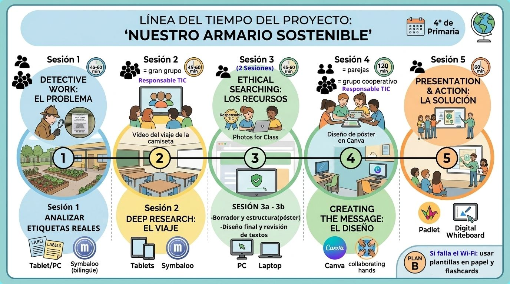
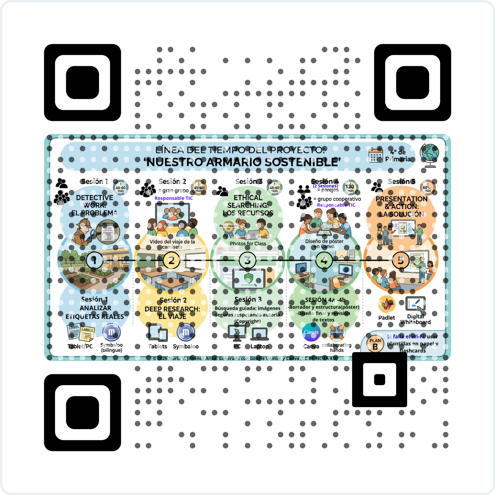

3.1.Línea del tiempo .
📌 Project Roadmap: Our Sustainable Wardrobe
Welcome to our journey! Here you can see how we are going to organize our work step by step.

🔍 Key Information for the Project:
- Para que nuestro proyecto sea un éxito, seguiremos estas pautas de organización:
🌍 Learning Spaces :
- No solo trabajaremos en el aula.
- ¡Saldremos al huerto escolar para conectar con la naturaleza!
👥 Working Together:
- Trabajaremos en parejas y equipos cooperativos.
- Recuerda que cada grupo tiene un Responsable TIC para ayudar con las tablets.
⏱️ Time Management:
- Cada sesión dura entre 45 y 60 minutos.
- ¡Mira el cronómetro en la imagen para organizarte!
💡 Plan B (Technical Issues):
- Don't worry! Si el Wi-Fi falla,
tenemos preparadas flashcards y plantillas en papel para seguir aprendiendo.
Nota para el docente: En caso de fallo de la conexión Wi-Fi,
se dispone de un Plan B, consistente en el uso de plantillas en papel
y flashcards físicas para no interrumpir el ritmo de la sesión.
